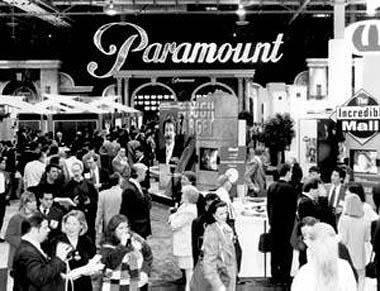
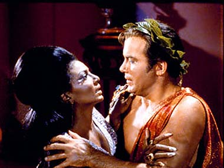
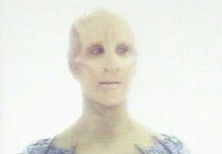
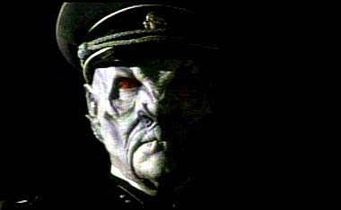

|

Clique aqui
para visitar o
Acervo de colunas

|

|
Um novo mito para o culto de Jornada
 De outro lado, sabemos que a Paramount Pictures tinha todo o interesse em ver Enterprise atingir o quarto ano. Com cerca de 100 episódios, uma série de televisão pode render muito mais dinheiro ao estúdio que a produziu, pois justifica a venda dos direitos de reprise a estações locais de TV espalhadas pelos Estados Unidos --procedimento de veiculação conhecido pelo nome de syndication. Todas as séries de Jornada já produzidas entraram nesse circuito e até hoje rendem fartos dividendos ao estúdio. Se Enterprise terminasse ao final do terceiro ano, com 76 episódios produzidos, até poderia ir ao mercado de syndication (a Série Clássica conseguiu, com 79 episódios), mas seu valor seria muito maior caso chegasse perto da marca de 100. Depois disso, em compensação, fica cada vez mais difícil justificar a produção de novos episódios --já existe um número suficiente para levar a série a syndication, e mais segmentos não trariam um bônus significativo. É importante lembrar que tanto Paramount quanto UPN são empresas do mesmo dono --o poderoso conglomerado Viacom, que, por sinal, está passando por alguma turbulência com a troca de cabeças no comando da companhia. Nada mais natural, portanto, que a empresa-mãe tentasse negociar com suas filhas um acordo que deixasse todo mundo feliz. Havia, portanto, uma tendência mercadológica à renovação de Enterprise por mais uma temporada. Claro, Dawn Ostroff não poderia chegar em sua apresentação da programação da UPN para 2004-2005 e dizer aos anunciantes: "Enterprise nós renovamos só para que a Paramount ficasse feliz, mas nem se animem muito, pois já sabemos que não vai dar audiência nenhuma". Ninguém faz negócios desse jeito. Em vez disso, ela disse: "Recebemos um monte de cartas e achamos que existe um público para essa série; e mais: achamos que as sextas-feiras não farão mal a ela". As duas versões estão aí. Em circunstâncias normais, não seria difícil escolher a mais provável. Mas estamos falando de Jornada nas Estrelas, cuja série original foi recentemente eleita pela revista "TV Guide" como o programa mais cultuado da história da televisão. É uma marca acostumada a criar mitos. Com o comentário de Dawn Ostroff, estamos testemunhando o nascimento de mais um deles. Em alguns anos, ouviremos da boca dos fãs que foram eles que salvaram Enterprise do cancelamento, durante sua terceira temporada. Que foi a dedicação dos trekkers que evitou que a série, protagonizada pelo excelente Scott Bakula, caísse no esquecimento. Eles terão até mesmo as declarações da UPN para provar que foi assim que aconteceu! É tão típico de Jornada nas Estrelas... não? Senão vejamos. Durante o terceiro ano da série original, houve um episódio chamado "Plato's Stepchildren". A história era besta e os personagens foram maltratados até dizer chega. Mas, em dado momento, os alienígenas malvados da semana obrigam Kirk a dar um beijo na tenente Uhura. A produção causou o maior alvoroço na época, pois nunca a televisão havia mostrado um beijo entre um branco e uma negra.  A NBC temia que suas afiliadas no sul do país nem exibissem o episódio, ou mesmo que o público mais conservador se revoltasse contra o programa. Tentaram de todas as formas tirar a cena do episódio. William Shatner e Nichelle Nichols lutaram bravamente para manter o roteiro como originalmente escrito. Mas a verdade é que a cena que foi ao ar, feita para não "agredir" os conservadores, não teve um beijo --a câmera foi posicionada de modo a dar essa impressão, mas os lábios dos atores jamais se tocaram. Shatner conta essa história em suas memórias. Moral da história: o primeiro beijo interracial da televisão na verdade não foi um beijo! Mesmo assim, o mito prevalece até hoje, e os fãs vivem lembrando o episódio como um dos grandes feitos de Jornada nas Estrelas. Não que o programa não tivesse realmente valor --tinha. Seus ideais sempre foram contrários ao preconceito racial, com episódios que ilustravam fartamente isso; Uhura e Sulu, representando minorias étnicas, sempre foram mostrados como oficiais competentes e tão responsáveis quanto os demais na tripulação da Enterprise; e é verdadeira a história de que Martin Luther King, grande líder na defesa dos direitos dos negros nos Estados Unidos, de fato era um dos apreciadores do programa. Jornada teve seus méritos e eu os reconheço plenamente. Mas não adianta forçar a barra --a série jamais conseguiu subverter o sistema. Por mais que os produtores, roteiristas e atores quisessem, o sistema impediu que o primeiro beijo interracial ocorresse em "Plato's Stepchildren".
  Quanto à audiência, só nos resta torcer para que as sextas-feiras sejam melhores que as quartas. A sorte favorece os audazes, diz o ditado. Resta saber se os audazes também conseguem fazer dinheiro... Salvador
Nogueira, jornalista, escreve regularmente
sobre |
 Às vezes, a vida prega peças na gente. Eu terminei minha última coluna, que falou basicamente do que seria de nós na eventualidade do cancelamento de
Enterprise, exaltando a importância dos fãs na continuidade da franquia, com suas produções independentes, enquanto
Jornada não voltasse a ser um produto comercialmente viável.
Às vezes, a vida prega peças na gente. Eu terminei minha última coluna, que falou basicamente do que seria de nós na eventualidade do cancelamento de
Enterprise, exaltando a importância dos fãs na continuidade da franquia, com suas produções independentes, enquanto
Jornada não voltasse a ser um produto comercialmente viável.